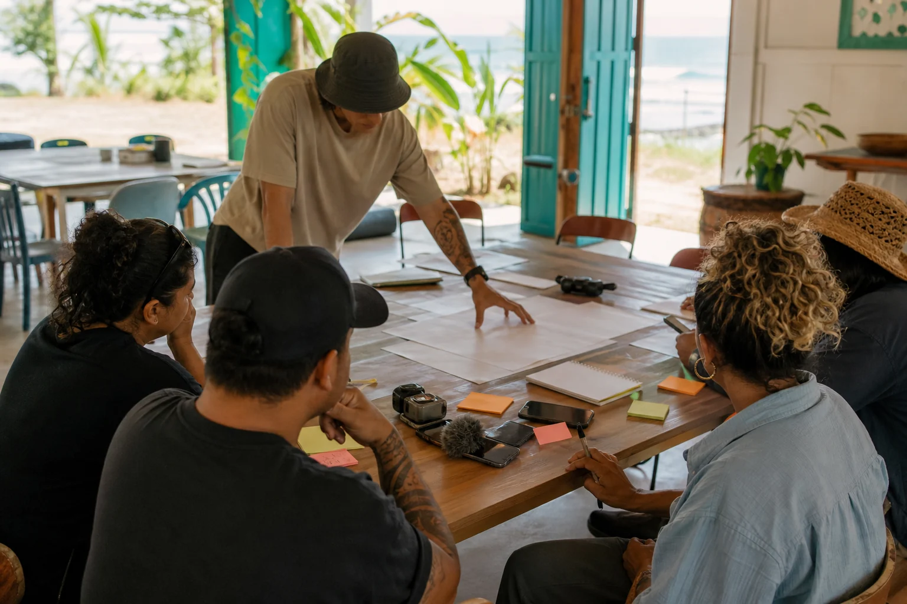

Quandamooka Film Festival
Bring your story. Use the tools if they help. Keep what is yours. Ask before using what belongs to others. AI can help with structure, prompts, planning, captions, and rough ideas, but humans hold the story.
Plain Doorway
A festival idea shaped around practical story care.
This site is a draft public toolkit for people who want to make a film, plan a screening, or prepare useful Markdown files for AI-assisted story work. It is not an official community rulebook and it does not tell anyone what their story should mean.
Choose A Path
What do you want to do next?
Start from zero
Move from idea to story seed, permissions, outline, storyboard, shot list, production plan, review, and readiness.
Make Markdown files
Use friendly forms that autosave, preview Markdown, copy it, and download clean `.md` files for later AI help.
Check readiness
Look at music, images, voices, footage, cultural review, privacy, film links, and what help you need next.

Who This Helps
First-timers, phone filmmakers, documentarians, young creators, and organisers.
The site keeps the language beginner-friendly because the point is to help people shape a usable plan, not impress them with film school vocabulary.
- Storytellers who have a spark but not a structure yet.
- People using a phone, simple camera, interview setup, or AI storyboard tool.
- Groups who need permissions, source trails, and public/private boundaries written down.
Careful Source Posture
Old brainstorms stay in the background.
The source documents behind this draft were treated as raw material, not as authority. This site does not claim approval from QYAC, MMEICAC, Elders, Council, schools, sponsors, businesses, or community groups.